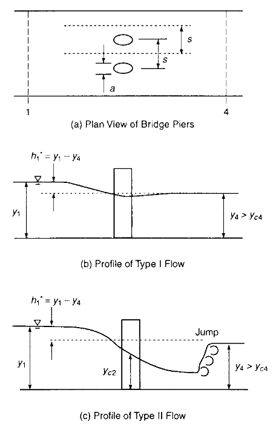

Bridge Piers¶
Momentum balances are useful when analyzing obstructions caused by elements placed in the flow, bridge piers being a prime example. The obstruction causes backwater effects in subcritical flow and even choking.
Definitions¶
Two flow regimes are shown below. Type-I is subcritical approach, remaining subcritical passing through the pier array. Type-II is where critical depth occurs in the constriction (kind of like a flooded broad crested weir).

For Type-I flow the momentum balance is
where \(F_D\) is the drag force of the piers on the water.
Example 3.3 (from Sturm)¶
A bridge is supported by square-noze piers having a width of 1.5 meters and a spacing of 15.0 meters. The piers have a drag coefficient of 2.0. If the downstream depth and velocity are 1.90 meters and 2.40 meters per second, what is the backwater (deepening upstream) caused by the piers?
The book presents an elegant solution, we however will just beat it to submission with numb3rs:
W = 16.5 #m channel width between equally spaced piers
g = 9.8 #m/s^2
yd = 1.9 #m
ud = 2.40 # m/s
Cd = 2.00 # given
Q = ud*W*yd
D = 1.5 # m diameter of a pier
#now a couple of funckshuns
def lhs(yu,yd,width,uu,Cd,gravity,diameter):
term1 = (gravity*width*yu**2)/2
term2 = (gravity*width*yd**2)/2
term3 = (Cd*diameter*yu*uu**2)/2
lhs = term1-term2-term3
return(lhs)
def rhs(uu,ud,Q):
rhs = (ud-uu)*Q
return(rhs)
# by brute force - guess yu, compute uu from Q supply to lhs,rhs when same have a solution print result
tolerance = 0.03
import math
yrange = [i/10000 for i in range(1000,100000)]
print("Depth (m) |","Velocity (m/s) |","Momentum Error ")
for irow in range(len(yrange)):
yu = yrange[irow]
uu = Q/(W*yu)
test = lhs(yu,yd,W,uu,Cd,g,D)-rhs(uu,ud,Q)
if abs(test) < tolerance:
print(round(yu,3)," | ",round(uu,3)," | ",round(lhs(yu,yd,W,uu,Cd,g,D)-rhs(uu,ud,Q),3))
#yrange
Depth (m) | Velocity (m/s) | Momentum Error
0.726 | 6.285 | 0.027
0.726 | 6.284 | -0.021
1.971 | 2.313 | -0.013
1.972 | 2.313 | 0.011
So the computed upstream depth is between \(1.971\) and \(1.972\) meters. The smaller zero does not make sense (the piers are not likely to force water to a shallower depth upstream of the disturbance.
Note
We can check our conjecture by computing the downstream Fr number, if it is less than 1.0 (subcritical) it is possible the piers could cause a transition from supercritical, but pretty unlikely unless the after pier Fr number is pretty large (say 0.8-ish)
Using 1.972 as our upstream depth, the backwater induced by the pier(s) is 1.972 - 1.90 (\(y_u - y_d\))=0.072 meters which agrees nicely with the elegant, graphical solution in the book of 0.076 meters. In our case with working scripts we have a useable NBR (No Brains Required) solution.
Example (Problem 4 from ES-1)¶
This example is not particularly special except the drag coefficient is unspecified and is determined from the Reynolds number based on depth for the flow field.
A bridge has cylindrical piers 1 \(m\) in diameter and spaced 15 \(m\) apart.
Downstream of the bridge, where the flow disturbance from the piers is no longer present, the flow depth is 2.9 \(m\) and the mean velocity is 2.5 \(\frac{m}{sec}\)
Figure 4 is a typical graph of drag coefficient for a single cylinder

Determine
The Reynolds number for the flow described (use the flow depth as the characteristic length)
The drag coefficient, \(C_d\) for a cylinder at the computed Reynolds number
The depth of flow upstream of the bridge
The head loss caused by the piers
sketch(s) here¶
The sketch below ia a plan view of the described conditions, we will analyze a 16 meter wide portion of the flow field; total width is unknown, and we will assume the single pier estimate applies across entire width.

An elevation view sketch is below - showing the energy grade line (as a nice gradient, in actuality all the head loss will be quite near the pier.

list known quantities¶
\(y_d = 2.9\) meters
\(u_d = 2.5\) meters per second
\(D_{pier} = 1.0\) meter
Pier array spacing is 15 meters
list unknown quantities¶
\(y_o = ?\) meters
\(u_o = ?\) meters per second
governing principles¶
Continunity; will appear as specific discharge \(\frac{Q}{width} = const.\)
Conservation of linear momentum
Concept of drag force
Approach is use Continunity and Momentum to find the upstream depth and velocity, then use the energy equation to infer head loss.
## solution (step-by-step/computations)
# Material Properties
rho = 1000 #kg/m^3
mu = 0.001 #N-s/m^2
nu = 1e-06 #s/m^2
vd = 2.5 # downstream velocity
dchar = 2.9 # characteristic depth
## Reynolds number
def Re(v,d,nu):
Re = v*d/nu
return(Re)
print("Reynolds Number based on depth",round(Re(vd,dchar,nu),3))
Reynolds Number based on depth 7250000.0
## Discharge/unit width
q = vd*dchar
print("Specific discharge ",round(q,3)," m^2/sec")
Specific discharge 7.25 m^2/sec
Cd = 0.96 #look up in chart
def Fd(Cd,A,rho,V):
Fd = 0.5*Cd*A*rho*V**2
return(Fd)
print("Drag on Cylinder ",round(Fd(Cd,1*dchar,rho,vd),3)," Newtons")
Drag on Cylinder 8700.0 Newtons
Now some more analysis
First a control volume on a 16-meter wide portion of channel that encloses 1 pier (as in the plan view)

Now the force balance rendering

Next some algebra

We can probably switch back to code
W = 16 #m channel withn between equally spaced piers
g = 9.8 #m/s^2 our friend grabity
yd = 2.9 #m yes i know its the same as dchar, but dont want python equivalence here
ud = 2.5 # m/s
Cd = 0.96 # from above
Q = q*W
D = 1.0 # m diameter of a pier
#now a couple of fun shuns
def lhs(yu,yd,width,uu,Cd,gravity,diameter):
term1 = (gravity*width*yu**2)/2
term2 = (gravity*width*yd**2)/2
term3 = (Cd*diameter*yu*uu**2)/2
lhs = term1-term2-term3
return(lhs)
def rhs(uu,ud,Q):
rhs = (ud-uu)*Q
return(rhs)
# check using
#print(lhs(2.92,yd,W,2.48,Cd,g,D))
#print(rhs(2.48,ud,Q))
# by brute force - guess yu, compute uu from Q supply to lhs,rhs when same have a solution print result
tolerance = 0.5
import math
yrange = [i/1000 for i in range(1000,10000)]
print("Depth (m) |","Velocity (m/s) |","Momentum Error ")
for irow in range(len(yrange)):
yu = yrange[irow]
uu = Q/(W*yu)
test = lhs(yu,yd,W,uu,Cd,g,D)-rhs(uu,ud,Q)
if abs(test) < tolerance:
print(round(yu,3)," | ",round(uu,3)," | ",round(lhs(yu,yd,W,uu,Cd,g,D)-rhs(uu,ud,Q),3))
#yrange
Depth (m) | Velocity (m/s) | Momentum Error
2.923 | 2.48 | -0.413
2.924 | 2.479 | -0.05
2.925 | 2.479 | 0.313
So by a brute force search, the following values are indicated
\(y_o = 2.924\)
\(u_o = 2.479\)
The momentum balance error is \(-0.05\), if we wanted could jack the search a bit to get another digit maybe. But this is probably close enough.
Now finally determine the energy loss from
Solve for \(\Delta H\)
yu = 2.924
uu = 2.479
Eup = yu + (uu**2)/(2*g)
Edown = yd + (ud**2)/(2*g)
DeltaH = Eup - Edown
print("Head loss ",round(DeltaH,3)," meters")
Head loss 0.019 meters